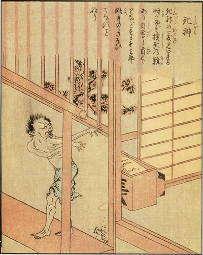

Produção |
INICIO | | PERSONAGENS | | MÍDIA | | PRODUÇÃO | |
O processo de criação da série começou quando Ohba levou alguns desenhos sobre duas ideias para Shueisha. Ohba disse que o one-shot de Death Note foi bem recebido pelo editor e obteve uma boa recepção dos leitores, mas ele disse que contar uma história em um único capítulo era "muito difícil" e que levou mais de um mês para escrever. Ohba disse que queria desenhar um mangá depois de ouvir sobre uma "história de horror com shinigamis". De acordo com o Obata, quando recebeu o projeto criado por Ohba, não entendeu muito bem, mas queria participar do projeto pela presença dos shinigamis e por ser um trabalho "sombrio". Também disse que se perguntou sobre o progresso do enredo quando leu os quadrinhos desenhados e se os leitores da Shōnen Jump gostariam da série. Ele indicou ainda que, embora houvesse pouca ação do personagem principal, ele gostou da atmosfera da história. Ohba levou o projeto one-shot para a editora e Obata foi o responsável mais tarde para continuar as ilustrações. O editor de Ohba disse a ele que era necessário se reunir com Obata para discutirem o capítulo piloto, então ele disse que "tudo ficaria bem".
O diretor da adaptação do anime, Tetsurō Araki, comentou que queria destacar os aspectos que tornaram a série interessante, em vez de se concentrar apenas na moral ou no conceito de justiça. O organizador da série, Toshiki Inoue, concordou com Araki e acrescentou que na adaptação do anime era importante destacar os aspectos que fazem a versão original interessante. Ele concluiu que a presença de Light foi o aspecto "mais atrativo", pelo modo que a adaptação narra "os pensamentos e ações de Light sempre que possível". Inoue notou que, para incorporar melhor o enredo do mangá no anime, ele mudou a ordem dos eventos e introduziu cenas retrospectivas depois da música-tema de abertura. Araki disse que, porque em um anime o espectador não pode "voltar as páginas" da maneira que um leitor de mangá pode, a equipe do anime sugeriu que esclarecesse alguns detalhes. Inoue disse que não queria preocupar-se com cada detalhe, portanto, a equipe selecionou os elementos para enfatizar; devido a complexidade do mangá, ele descreveu o processo como "delicado e definitivamente um grande desafio". Inoue disse que colocou mais instruções do que o normal no roteiro e Araki disse que era devido à importância dos detalhes, essas instruções tornou-se crucial para o desenvolvimento da série. Araki disse que quando ele descobriu o projeto de animação de Death Note "literalmente implorou" para fazem parte da equipe de produção, uma vez que ele conseguiu, Inoue insistiu que deveria escrever o roteiro. Inoue acrescentou que, gostava de ler o mangá e por isso queria se esforçar no projeto.

Representação artística de um exemplo de um shinigami no livro Ehon Hyaku Monogatari, muito parecido com os shinigamis da série.